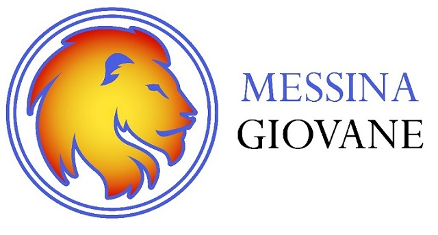

Chi Siamo

L'associazione Universitaria Culturale Messina Giovane nasce nel 2009.
La compongono studenti universitari dell'Ateneo Messinese che mirano alla valorizzazione della propria città, di quanto essa già offre e potrà offrire in futuro alle nuove generazioni.
Sin dai suoi primi anni di vita l'associazione ha sposato le cause dell'interazione fra gli studenti della città, attraverso la promozione di eventi culturali e ricreativi, quali concerti, cineforum, spettacoli teatrali e convegni di studio, attività sportive, giornalistiche, anche on-line.
Nel 2012 l'Associazione "ricomincia da zero" con le nuove energie di un consiglio direttivo neo formato volto ad assicurare il ricambio generazionale e animato dalla stessa fiducia verso la città e i suoi cittadini.
La prima nuova idea che arricchisce le attività promosse dall'associazione riguarda l'attenzione al volontariato, con lo scopo di facilitare i contatti e lo scambio di idee fra le associazioni di volontariato italiane a Messina, creando una rete di collegamenti che agevoli l'efficacia delle varie azioni ed iniziative.
Lo slogan dell'Associazione diventa quindi il trinomio Università-Socialità-Volontariato.
La nostra Mission
Moltiplicare le iniziative, piccole e grandi, per fornire nel tessuto urbano un ventaglio di opportunità di incontri che consenta interscambio, libertà di scelta e la possibilità di soddisfare molteplici interessi.
La nostra Vision
Diventare attori di una crescita culturale che sia sempre più propositiva ed essere figure di traino nella determinazione del cambiamento.